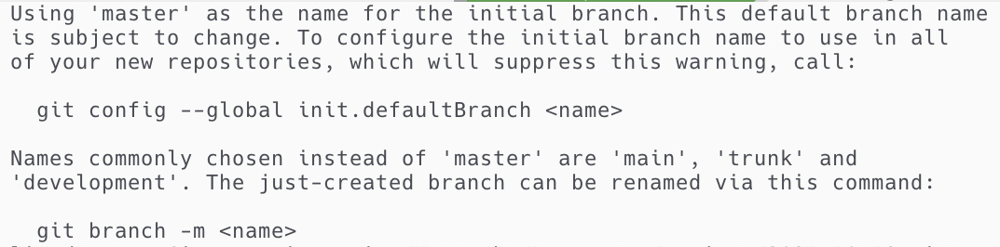
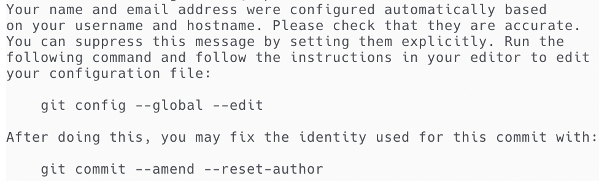

版本管理工具 git 快速上手
最后更新：2021.12.06, 14:13
本文收集了从 2020.01.28 到 2020.06.08 期间记录的 git 使用方法, 主体内容是 git 常用指令.
Initialize Repository
1 | |
The properties of repository can see [8] [9]
There are some advices provided by git itself


File Operate
1 | |
Branch
1 | |
Notation :
- 参数
--no-ff的作用是禁用Fast forward模式, 使 Git 在merge的时候生成一个新的 commit, 这样就可以看出分支的合并历史. 如果没有分支冲突, 通过
git log --graph显示的分支图只会是单线, 而不会出现分叉. 如果出现分叉, 表示该次和并时出现了分支冲突并被解决了。如1
2
3
4
5
6
7
8
9
10
11$ git log --graph --pretty=oneline --abbrev-commit
* 967f83b (HEAD -> dev, master) Merge branch 'dev'
|\
| * 08718f0 add text at dev branch
* | fa01075 add line at master branch
|/
* 064ad36 add text to test branch
* 8f4ca0c add text to test branch
* 47f8323 add a line to test file
* 4773356 feat: build test file实际上这里的前四次提交中存在分支
dev与master的合并, 但由于它们没有分支冲突, 因此从分支图上看不出分支合并的痕迹。在
git log的输出结果中, 某个特定分支的最前端所处位置会以分支名标出。如1
2
3
4
5
6
7
8
9
10$ git log --graph --pretty=oneline --abbrev-commit
* 8bc27fe (HEAD -> master) change: snippet of LaTeX (`tilde` ---> `widetilde`)
* 2bd1518 change: reduce the length of segment line of C language
...
* afcf62d (origin/master) add: snippet of html (code, font size, space)
* 2e1658c add: short cut to change markdown's preview style (in markdown's ftplugin)
...
* 47e170b (origin/tmp, tmp) change: combine template of "diary (schedule)" and "log" as "schedule"
* 7a745f0 feat: enhanced the functions purovided by plugs
...输出结果中
(HEAD -> master),(origin/master)分别标出了本地master与远程master分支所处的位置 (origin为 remote 分支的名字), 而(origin/tmp, tmp)则表明远程tmp分支与本地tmp分支处于同一位置。- the flow of merge other branch (marked as
dev) tomasterbranch can be (label branch with square):- 1st step: [
dev] stage and commit - 2ed step: [
dev] usegit merge master - 3rd step: [
dev] solve the possible conflict - 4th step: [
dev] stage solving of conflicting and commit - 5th step: [
dev] usegit merge masteragain - 6th step: [
dev] usegit checkout master - 7th step: [
master] usegit merge devto set pointer ofmasterto the node of mergeddev
- 1st step: [
Version Switch
1 | |
Remote
首先给出与远程同步相关的命令
1 | |
Collide
如果远程库与本地库不同, 将无法 push 成功. 此时需要先 pull 下来, 手动解决冲突并在本地进行提交后再进行 push. 具体来说, 可能遇到如下类型的冲突:
- 远程新建了文件, 本地没有新建 :
pull后本地会出现远程新建的文件, 此时就用正常的commit方法就可以了. - 同一文件, 远程库与本地库内容不同 :
pull以后会用<<<<<<<,=======,>>>>>>>标记出不同分支的内容, 手动将这些符号处理掉后将本文件提交即可
如, 对某文件, 若本地库内容为:
1 | |
远程库内容为:
1 | |
则 pull 后该文件显示为:
1 | |
后面的序号可能不同, 这一点不要在意. 此时只要手工处理掉冲突标识符再保存即可正常 push 了, 分支冲突的解决也是类似的. (似乎再 merge 的时候会自动把文件改成带冲突标识符的样子, 具体的我还没试过)
应注意, 如果本地的分支和远程的分支从来没有建立过联系, 则无法采取上面的方式. 也就是说: 不要既在 Github 上新开项目并建立 LICENSE 又在本地建立新库. 这样的话同名的分支 (如 master) 从来没有历史联系, 但又存在不同, 于是只有通过本地强制覆盖远程来完成同步.
Commit
在每次提交更新时通常要写入对该次更新的描述. 一般而言, 使用 git commit -m '<msg>' 即可. 但如果需要写的内容较多, 可以考虑直接使用 git commit 来写入 commit 的信息.
在执行 git commit 后, 将启动文本编辑器以便输入本次提交的说明. 默认会启用 shell 的环境变量 $EDITOR 所指定的软件, 一般都是 Vim 或 Emacs. 此时会看到类似下面的文本信息:
1 | |
特点可归纳如下 :
- 第一行是空行, 在该处输入 commit message
- 空行的下面是关于 commit message 编辑时的基本规则
- 以
#开头的行将被忽略 - 若没有输入任何信息, 或只有空行及注释, 则退出文本编辑器后, 本次 commit 操作将被忽略.
退出编辑器时, 若 commit message 非空, 则 git 会丢掉注释行, 用所输入的附带信息生成一次提交. ( 关于这里有一个猜想 : 通过指令 git commit 打开的文件只存在与一个临时的缓冲区, 一旦退出, 将会根据文件是否为空来决定如何处理内容. 换句话说, 所打开的编辑 commit message 的文件应该只是一个临时文件 )
一般地, commit 的信息有一定的格式规范.
Notation :
- 可以在后面加上
-v选项将所作的改变的 diff 输出放在编辑器中总而可知道本次具体做了哪些修改. - 可使用
git commit --amend来修改最近提交的commit信息
Standard of commit message
本部分内容主要来自 阮一峰的网络日志 [6]. 每次提交, commit message 都包括三个部分 : Header, Body, Footer. 基本格式为 :
1 | |
其中 Header 是必须的, Body 和 Footer 可以省略.
Header
Header 只有一行, 包括三个字段 :
<type>( 必需 ) : 用以说明 commit 的类别, 只允许使用下面 7 个标识 :- feat : 新功能 ( feature )
- fix : 修补 bug
- docs : 文档 ( documentation )
- style : 格式 ( 不影响代码运行 )
- refactor : 重构 ( 即不是新增功能, 也不是修改 bug 的代码变动 )
- test : 增加删减
- chore : 构建过程或辅助工具的变动
<scope>( 可选 ) : 用于说明 commit 影响的范围, 比如数据层、控制层、视图层等等, 视项目不同而不同.<subject>( 必需 ) : commit 目的的简短描述, 应遵循以下规范 :- 不超过 50 个字符.
- 以动词开头, 使用第一人称现在时,
- 第一个字母小写
- 结尾不加句号
.
Body
<body> 是对本次 commit 的详细描述, 可以分成多行. 编写时应注意
- 使用第一人称现在时
- 应说明代码变动的动机
- 要与以前行文进行对比
Footer
<footer> 只用于两种情况 :
- 不兼容变动 : 如果当前代码与上一个版本不兼容, 则 Footer 部分以
BREAKING CHANGE开头, 后面是对变动的描述、以及变动理由和迁移方法. 如 :1
2
3
4
5
6
7
8
9
10
11
12
13
14
15
16
17BREAKING CHANGE: isolate scope bindings definition has changed.
To migrate the code follow the example below:
Before:
scope: {
myAttr: 'attribute',
}
After:
scope: {
myAttr: '@',
}
The removed `inject` wasn't generaly useful for directives so there should be no code using it. - 关闭 issue : 如果当前 commit 针对某个issue, 那么可以在 Footer 部分关闭这个 issue. 形式如 :
1
Closes #234
Revert
还有一种特殊情况, 如果当前 commit 用于撤销以前的 commit, 则必须以 revert: 开头, 后面跟着被撤销 commit 的 Header. 如
1 | |
Body部分的格式是固定的, 必须写成 This reverts commit <hash>., 其中的hash是被撤销 commit 的 SHA 标识符.
Ignore File
git 中忽略文件基本的方法是通过编写 .gitignore 文件完成对文件的忽略. 对于文件路径的描述支持 glob 的正则表达式 [5] . 主要特点有
- 以
#开头的行为注释行. /path表示相对当前目录的路径,path/表示所有路径path之下的子目录.- 文件名中含有空格需使用转义符, 如
Course\ (Markdown)[7] - 使用
**表示匹配任意层级的目录。如**/fig可匹配doc/fig,doc/section/fig等目录
Tag
1 | |
DEBUG
Collide between Local and Remote Repository
(2020.02.22) 在整理群论笔记的时候, 发现之前忘记了把在 Github 上建立的 LICENSE 给 pull 下来, 所以直接 push 发生了冲突. 之后通过先 pull, 再提交 pull 得到的新增内容到本地, 最后再 push, 从而解决了问题. [1] [2] [3]
git log 中文编码错误
可以在 .gitconfig 内加入 [4] :
1 | |
或在命令行中运行指令:
1 | |
其中第一条表示提交命令的时候使用 utf-8 编码集提交, 第二条表示日志输出时使用utf-8编码集显示
随后设置环境变量:
1 | |
其设置LESS字符集为utf-8.
Reference
本博客所有文章除特别声明外，均采用 CC BY-NC-SA 4.0 协议 ，转载请注明出处！